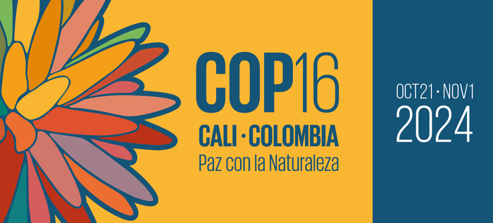

 Tonado de : https://www.cali.gov.co
La XVI Conferencia de las Naciones Unidas sobre el Cambio Climático de 2024 , conocida como COP16 , se llevará a cabo en la ciudad de Cali, Colombia, evento clave en las negociaciones globales para combatir el cambio climático. Durante esta conferencia, los países participantes realizarán acuerdos y compromisos para reducir las emisiones de gases de efecto invernadero, establecer mecanismos de financiamiento para los países en desarrollo y formular políticas de adaptación a los efectos del cambio climático. A ella acudirán representantes de los paises que firmaron el Convenio sobre Diversidad Biológica (CDB) adoptado durante la Cumbre de la Tierra en Rio de Janeiro en 1992.
El proyecto a desarrollar en el curso de Estadística para la toma de decisiones, tiene como objetivo que los estudiantes analicen datos relacionados con las temáticas discutidas en la COP16, como la evolución de las emisiones de carbono, la adopción de energías renovables, la financiación para proyectos de mitigación, entre otros. Los estudiantes deberán aplicar técnicas de estadística descriptiva y estadística inferencial para analizar estos datos, interpretarlos y comunicar sus hallazgos a través de un póster científico .
Cada equipo, conformado por hasta 4 estudiantes , seleccionará un tema específico vinculado a la COP 16 y desarrollará un análisis basado en datos reales provenientes de fuentes abiertas. El proyecto permitirá a los estudiantes practicar el uso de herramientas estadísticas, desarrollar habilidades de análisis de datos y aprender a presentar resultados de manera clara y efectiva.
Título, Introducción, Problema, Objetivo y Fuentes de Información
Fecha de Entrega : septiembre 26.
Contenido :
El póster es un producto académico , no una infografía comercial. Se deben priorizar los datos y el análisis, asegurando que el contenido sea claro y con rigor científico. Debe incluir por lo menos seis inferencias estadisticas - intervalos de confianza y/o pruebas de hipótesis.
Podrá encontrar plantillas en formato latex en Overleaf. No se aceptan trabajos realizados en Canvan o PowerPoint
Otra alternativa es el paquete de R : posterdown, el
cual genera una plantilla.